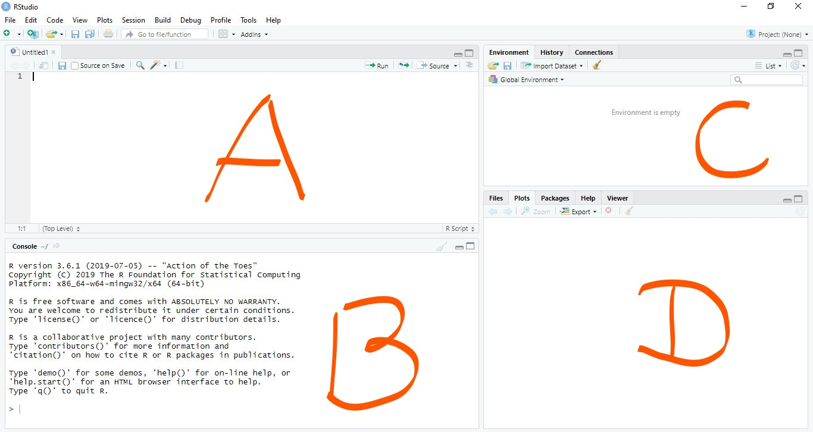
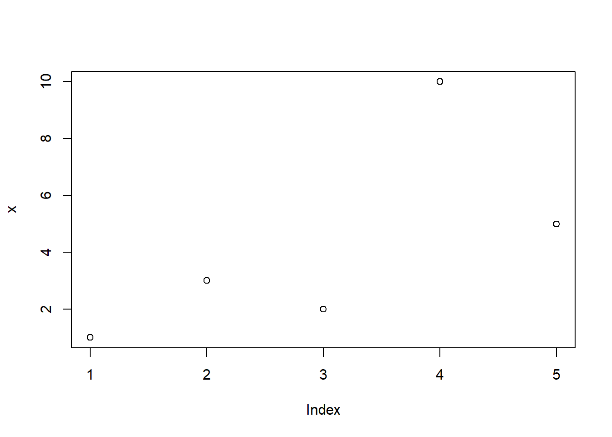

What is R and why R?
R is a free statistical programming language. It has been widely used for statistics, data analysis and data visualization. One of the fields where R is widely used is genomics. Many R packages have been developed for population genetics data analyses and visualization.
Installing R and Rstudio
Download and install R and RStudio. if you do not have them already. Rstudio is optional but it is a great tool if you are just starting to learn R. Once you have download and installed R and Rstudio, we ll start working by creating project.
Now open Rstudio. We ll learn couple of basic things.
- Under whats in different panes in Rstudio.
- We ll learn how to create an R project directory.
- We ll learn how to use base functions and later how to install packages.
- What are packages, how is it useful and how to find help etc.
Rstudio

We ll talk about these 4 distinct panes.
Creating new project directory
Once you are inside Rstudio you can click on your top right where it says project to create a new project. By doing this you ll have all your data and script in one location.

Now we can start working in Rstudio but before we go ahead and start writing scripts we can even work in our console.
In the console type getwd() and see what happens.
R as calculator
# Add
5+10## [1] 15# Substract
10-5 ## [1] 5# Multiply
5 * 10## [1] 50# Divide
100 / 5## [1] 20R data structures
Vectors
A vector can contain either number, strings, or logical values but not a mixture.
x <- 100
x## [1] 100x <- c(1,3,2,10,5)
str(x)## num [1:5] 1 3 2 10 5class(x)## [1] "numeric"# Selecting elements from vector
x[3]## [1] 2# lets plot something
plot(x)
Basic statistics
mean(x)## [1] 4.2median(x)## [1] 3sd(x)## [1] 3.563706var(x)## [1] 12.7t.test(x)##
## One Sample t-test
##
## data: x
## t = 2.6353, df = 4, p-value = 0.05786
## alternative hypothesis: true mean is not equal to 0
## 95 percent confidence interval:
## -0.2249254 8.6249254
## sample estimates:
## mean of x
## 4.2## See what summary command does
summary(x)## Min. 1st Qu. Median Mean 3rd Qu. Max.
## 1.0 2.0 3.0 4.2 5.0 10.0List
List can hold different types of data structures.
mylist <- list(name="Fred",
mynumbers=c(1,2,3),
mymatrix=matrix(1:4,ncol=2),
age=5.3)
mylist## $name
## [1] "Fred"
##
## $mynumbers
## [1] 1 2 3
##
## $mymatrix
## [,1] [,2]
## [1,] 1 3
## [2,] 2 4
##
## $age
## [1] 5.3## access using $ sign.
mylist$name## [1] "Fred"Matrix
Matrix is vector but with dimension.
my_matrix <- matrix(data = 1:10,nrow = 5, ncol = 2)
dim(my_matrix)## [1] 5 2rownames(my_matrix) <- c("Btl", "Ktm", "Bhw", "Bkt", "Pak")
my_matrix## [,1] [,2]
## Btl 1 6
## Ktm 2 7
## Bhw 3 8
## Bkt 4 9
## Pak 5 10colnames(my_matrix) <- c("ItemA", "ItemB")
my_matrix## ItemA ItemB
## Btl 1 6
## Ktm 2 7
## Bhw 3 8
## Bkt 4 9
## Pak 5 10x <- c(1,2,3,4)
y <- c(4,5,6,7)
matrix <- cbind(x,y)Data frame
chr <- c("chr1", "chr1", "chr2", "chr2")
strand <- c("-","-","+","+")
start <- c(200,4000,100,400)
end <- c(250,410,200,450)
mydata <- data.frame(chr,start,end,strand)
head(mydata)## chr start end strand
## 1 chr1 200 250 -
## 2 chr1 4000 410 -
## 3 chr2 100 200 +
## 4 chr2 400 450 +#change column names
names(mydata) <- c("Chromosome","Start_position","End_position","Strand")
mydata ## Chromosome Start_position End_position Strand
## 1 chr1 200 250 -
## 2 chr1 4000 410 -
## 3 chr2 100 200 +
## 4 chr2 400 450 +head(mydata)## Chromosome Start_position End_position Strand
## 1 chr1 200 250 -
## 2 chr1 4000 410 -
## 3 chr2 100 200 +
## 4 chr2 400 450 +tail(mydata)## Chromosome Start_position End_position Strand
## 1 chr1 200 250 -
## 2 chr1 4000 410 -
## 3 chr2 100 200 +
## 4 chr2 400 450 +nrow(mydata)## [1] 4ncol(mydata)## [1] 4dim(mydata)## [1] 4 4## Save csv file
#write.csv(x = mydata, file = "mydata.csv")Mini exercise
Create a dataframe with following columns of your group member (First_name, Last_name, home_district, Approx_height and one random number between 0 to 100).
Use functions to find how many rows and columns are there in your dataframe
Try combining first_name and last_name column and rename it to Name
Find mean of a column which has that random number.
R for plant pathologist
For this part, we ll use the workshop material developed by Dr. Sydney E. Everhart’s lab at University of Nebraska, Lincoln.